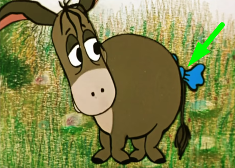

| Winnie-The-Pooh Test Team | postoronnim.v |
|---|
< PREV |
#WTP-C-E-5 "Хвост ослика Иа-Иа" |
NEXT > |
|---|
| Тест-кейс | WTP-C-E-5 | Исправил | Кролик | Дата | 05.07.1972 | |
|---|---|---|---|---|---|---|
| Приоритет | Highest | Требования | Сценарий серии "Винни-Пух и день забот" | |||
| Предусловия | 1. Тестировать в день рождения Иа-Иа; 2. Иа-Иа приведен в грустное состояние. |
|||||
| Шаг # | Описание шага | Ожидаемый результат | ||||
| 1 | Выйти на поляну | Хвост присутствует (см. скрин).  |
||||
| 2 | Поздороваться с Иа-Иа | |||||
| 3 | Осмотреть хвост | |||||
| Теги | Автоматизировано: | Замечания: | ||||
|
#smoke #function #gui |
Нет | Нет | ||||